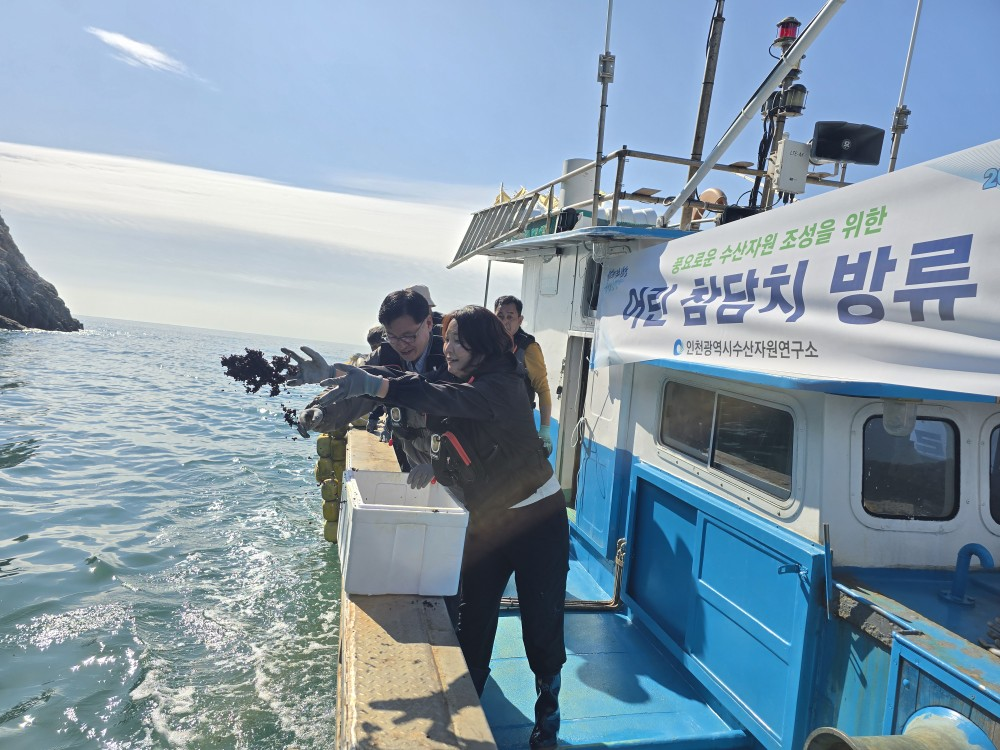

해상풍력과 어업의 공존 조건, 보상·안전 같은 위험 규칙
유럽 논문 49편 검토, 계획·법 다음 위험 규칙
영국 응답 어업인 67% 어장 이동, 보상 17명
AI경제저널=김갑봉 기자 | 유럽 논문 49편을 검토한 스웨덴 연구진이 바다를 함께 쓰는 공존이 멈춘 되풀이된 이유 가운데 하나로 위험 규칙의 부재를 꼽았다. 위험 규칙은 보상·책임·안전구역 같은 장치다. 영국·미국·한국 논문 세 편은 어업인의 어장 이동과 보상, 사례별 협상, 어업피해조사의 범위를 다뤘다.
유럽 검토와 미국 연구는 『마린 폴리시(Marine Policy)』, 영국 연구는 『에너지 폴리시(Energy Policy)』에 실렸다. 둘 다 사회과학인용색인(SSCI) 등재지다. 한국 연구는 한국학술지인용색인(KCI) 등재지 『수산경영론집』에 실렸다.
공존의 순서, 계획·법 다음 위험 규칙
카리나 바르켓(스톡홀름환경연구소)과 루시아나 페르난데스 코엘류(룬드대학교)는 바다를 여러 용도로 함께 쓴 유럽 사례를 다룬 논문 49편을 검토했다. 2007년부터 2025년 5월까지 나온 연구다. 사례의 절반 가까이는 북해였고, 북해 사례는 해상풍력 단지 안의 어업·양식 동일 입지가 중심이었다.
공존이 이뤄진 곳은 대체로 공간계획과 법을 먼저 세웠다. 그다음 안전구역·책임 배분·보상 같은 위험 규칙을 더했고, 시범사업과 감시로 실행을 받쳤다. 풍력단지 안 활동을 보장하는 보험은 보장이 좁았고, 사례마다 따로 맺거나 주요 위험을 빼고 맺었다.
미국에는 연방 차원의 해역 공동 이용 정책이 없다. 세라 린들리 스미스 등 연구진(Smith 외, 2025)은 남부 뉴잉글랜드의 핵심 정보제공자 11명을 면접했다. 연구진은 해역 공동 이용이 사례별 협상으로 이뤄졌다고 밝혔다.
정보제공자 11명 가운데 10명은 패류·해조 양식이 단지와 함께 갈 수 있다고 봤다. 먼저 들어선 두 단지는 터빈 간격을 1해리로 두었지만 많은 어업인이 안전에 모자란다고 봤다.
영국 어업인 52명 조사, 보상은 17명
영국 어업인 조사는 보상 실태를 수치로 보였다. C. L. 쇼스텍 등 플리머스해양연구소와 애버딘대 연구진(Szostek 외, 2025)은 상업어업인 52명을 설문하고 16명을 면접했다.
응답자 35명(67%)이 다른 어장에서 조업한다고 답했고 37명(71%)이 재정 손실을 봤다고 답했다. 보상을 받은 사람은 17명이고 그 가운데 14명이 고정어구 어업인이었다. 일부는 탄성파 탐사·공사 같은 일시 기간만 보상받았고, 비밀유지 서약을 요구받은 사람도 있었다.
연구진은 작은 배가 가까운 연안 어장을 써서 그 어장을 잃으면 옮겨 갈 곳이 없다고 분석했다. 응답자 상당수는 허용되더라도 풍력단지 안에서 조업하지 않겠다고 답했다. 계획된 단지가 모두 들어서면 업을 떠나는 것을 생각하겠다는 응답은 35명이었다.
피해를 재는 잣대, 건설 단계에 멈춘 조사
영국 응답자들은 해저케이블이 터빈만큼 영향을 준다고 봤다. 케이블 전자기장이 물고기 회유와 게의 행동에 영향을 준다는 응답도 나왔다.
국내 어업피해조사는 이 대목을 다루지 않았다. 남윤석 한국부동산원 차장과 한국해양수산연구원 연구진(2023)은 국내 해상풍력 어업피해조사 두 건이 모두 건설 단계 피해만 다뤘다고 분석했다. 운영 단계 소음·진동과 해저케이블 전자기장은 조사하지 않았다.
60MW 단지 조사에서는 신고어업 1641건이 신고된 조업구역이 제외 지역이라는 이유로 피해 대상에서 빠졌다. 72MW 단지 조사는 6개월 만에 끝났고, 조업구역 축소의 영구 피해기간에 수산업법 시행령 별표 기준 8.33년을 적용했다. 연구진은 해상풍력에 맞는 표준 조사 방법 마련을 제안했다.
협의의 자리, 사업권 주기 전 계획 단계
바르켓 등 연구진은 방향과 잠정 위험 규칙을 일찍 세우라고 권고했다. 스미스 등 연구진은 사업권을 주기 전 계획 단계에서 공동 이용 전략을 세우라고 했다. 쇼스텍 등 연구진은 인허가 전에 어업 자료를 반영하고 어업계를 법정 협의 주체로 두라고 권고했다.
한국은 지난 3월 26일 해상풍력특별법을 시행했다. 시행령은 민관협의회를 15명 이상 25명 이내로 두고, 위원의 절반 이상을 어업인단체와 주민대표로 정했다. 회의는 재적위원 3분의 2 이상이 나와야 열리고, 출석위원 3분의 2 이상이 찬성해야 의결한다.
인천시는 2022년부터 해상풍력 민관협의회를 운영하며 주민·어업인 의견을 들었다고 밝혔다. 인천도시공사는 지난 7월 30일 공공주도 해상풍력 집적화단지(IC1) 680MW의 발전사업허가를 신청했다.

참고문헌
- Barquet, K., Coelho, L. F., 「Operationalizing marine multifunctionality in Europe: Policy mixes, activation modes, and governance functions」, 『Marine Policy』 193, Elsevier, 2026년 11월, 107202, https://doi.org/10.1016/j.marpol.2026.107202
- Szostek, C. L., Watson, S. C. L., Trifonova, N., Beaumont, N. J., Scott, B. E., 「Spatial conflict in offshore wind farms: Challenges and solutions for the commercial fishing industry」, 『Energy Policy』 200, Elsevier, 2025년 5월, 114555, https://doi.org/10.1016/j.enpol.2025.114555
- Smith, S. L., McCann, J., Bingham, J. A. 외, 「Advancing multi-use in offshore wind energy planning: Perceived opportunities and barriers in southern New England, U.S.」, 『Marine Policy』 181, Elsevier, 2025년 11월, 106851, https://doi.org/10.1016/j.marpol.2025.106851
- 남윤석·추현기·류거현, 「해상풍력 발전사업에 따른 어업피해조사 문제점 및 개선방안에 대한 연구」, 『수산경영론집』 54(2), 한국수산경영학회, 2023년 6월, 91~107쪽, https://doi.org/10.12939/FBA.2023.54.2.091
- 법제처 국민참여입법센터, 「해상풍력 보급 촉진 및 산업 육성에 관한 특별법 시행령」 입법 정보(대통령령 제36216호, 2026년 3월 24일 공포, 소관 기후에너지환경부), https://community.lawmaking.go.kr/lmSts/govLm/2000000322318/detailRP
- 인천광역시, 「인천시, 공공주도 해상풍력 집적화단지(IC1) 발전사업허가 신청」 보도자료, 신재생에너지과, 2026년 7월 30일, https://www.incheon.go.kr/IC010205/view?repSeq=DOM_0000000015248066
[사진 출처]
- [사진 1] 인천광역시 수산자원연구소, 「인천시, 대이작해역에 어린 참담치 35만 마리 방류」 보도자료(2026년 10월 20일) 붙임 사진, 공공누리 출처표시, https://www.incheon.go.kr/IC010205/view?repSeq=DOM_0000000015789110
관련기사
- [해상풍력 기획] 인천 공공 해상풍력 1000MW, 연내 전력계통 협의 목표
- [해상풍력 기획] 인천 해상풍력 섬 주민 몫, 세 제도의 공백
- [어민·수산] 44년 만에 열린 인천 연안 밤바다, 서해5도는 일몰 후 30분
- 노동 몫 줄어든 원천, 기계값·이윤 폭·집값 셋으로 갈린다
저작권자 © AI경제저널 무단전재 및 재배포, AI학습 및 활용 금지